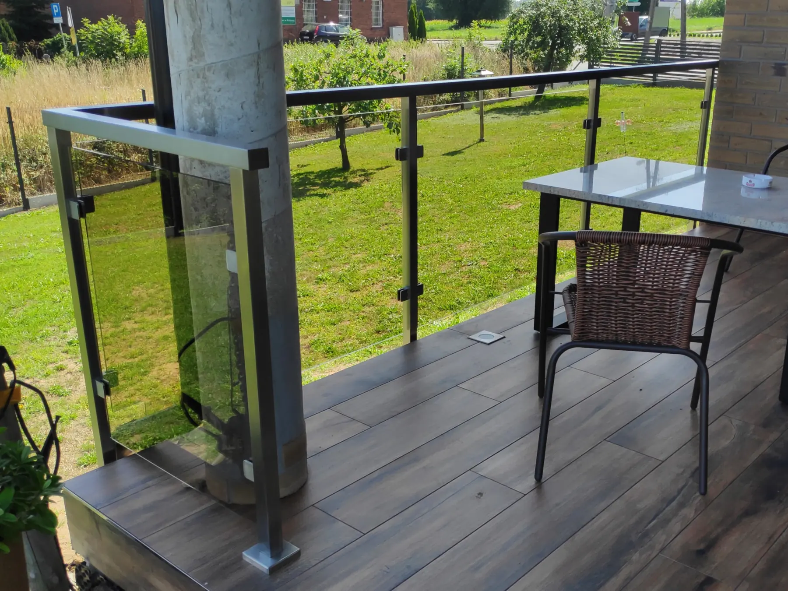
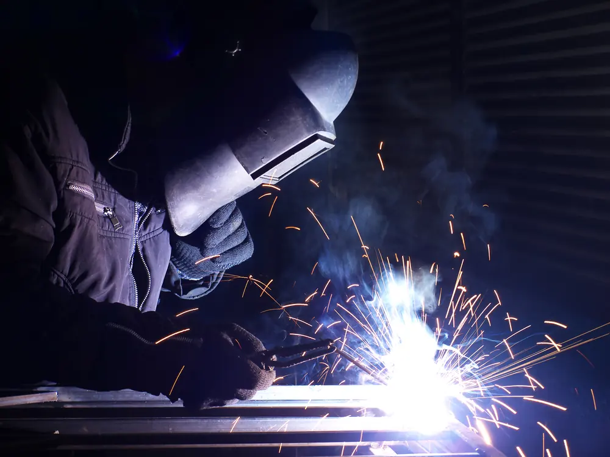
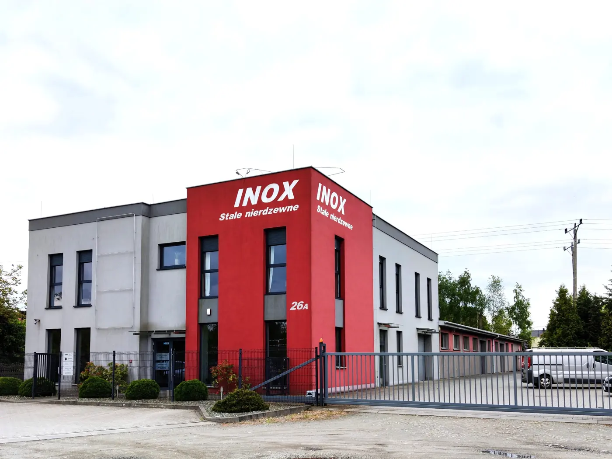

Stal nierdzewna z Ostrowa Wielkopolskiego
Balustrady dla domu, wykonawstwo dla przemysłu i sprzedaż rur oraz armatury od ręki. Wybierz, czego szukasz.

Dla domu
Balustrady schodowe, tarasowe i balkonowe oraz daszki, ze stali nierdzewnej i szkła. Bezpłatny pomiar na miejscu.
Typy, galerie i wycena
Dla firm
Wykonawstwo przemysłowe: rurociągi, drabiny, prefabrykaty. Sprzedaż rur, profili i armatury z magazynu.
Balustrady na wymiar, od pomiaru do montażu
Robimy je głównie z własnoręcznie wykonanych elementów i systemów, dlatego radzimy sobie także z nietypowymi schodami i trudnym montażem. Przyjmujemy małe i duże zlecenia, dopasujemy się do budżetu.

Schodowe wewnętrzne
Pręty poziome lub pionowe, pochwyt przyścienny

Balustrady w czerni
Proste formy do nowoczesnych wnętrz

Szklane, tarasowe i balkonowe
Szkło na słupkach lub mocowaniach punktowych

Balkonowe z prętów
Lekka stal szlifowana na elewację

Schody zewnętrzne i pochylnie
Poręcze przy wejściach i podjazdach

Daszki nad wejściem
Szkło na nierdzewnych wspornikach
Bezpłatne spotkanie
Przyjeżdżamy na miejsce realizacji i omawiamy Twoje oczekiwania.
Pomiar
Mierzymy schody, taras lub balkon na miejscu.
Dobór rozwiązań
Proponujemy wzór i sposób montażu do warunków technicznych.
Wycena w kilka dni
Dostajesz konkretną cenę Twojej balustrady.
Wykonanie i montaż
Robimy we własnym warsztacie i montujemy u Ciebie.

Spawamy metodą TIG i laserem FIBER, w osłonie argonu
Mamy własny magazyn stali, park maszynowy i ekipę z wieloletnim doświadczeniem. Elementy robimy u siebie, w Ostrowie Wielkopolskim.
Wykonawstwo przemysłowe
Rurociągi technologiczne, drabiny do zbiorników, pomosty i konstrukcje wsporcze ze stali 304, 316 lub innej wskazanej przez klienta. Inżynierowie pracują razem z naszą ekipą wykonawczą. Przyjmujemy też małe zlecenia.
Przemysł spożywczy
Rurociągi i elementy ze stali kwasoodpornej
Farmacja
Instalacje w gatunku 316 i wskazanym przez klienta
Budownictwo
Balustrady, schody, pomosty, konstrukcje
Woda procesowa i ścieki
Montaż i modernizacja instalacji
Chłodnictwo
Instalacje wody chłodniczej
Sprężone powietrze
Rurociągi i armatura nierdzewna
Maszyny i linie
Konstrukcje wsporcze, części maszyn
Zbiorniki
Drabiny, podesty, zbiorniczki

Materiał od ręki, w magazynie w Ostrowie
Dla montażystów, małych firm i majsterkowiczów, którzy potrzebują armatury na już albo nie zamówią transportu całej dłużycy.
- Armatura od rękiKolana, trójniki, redukcje, nyple, mufy, kołnierze, zawory kulowe.
- Rury i profile na metryStal 304 w standardzie, także krótsze odcinki niż handlowe.
- Cięcie pod wymiarRównież pod kątem, na przecinarkach taśmowych z chłodzeniem.
- Odbiór osobistySadowa 26A, pn-pt 8:00-16:00. Dojazd od ul. Południowej.
Nasze produkty, także w sklepie online
Te same produkty, które sprzedajemy na Allegro, kupisz bezpośrednio u nas. Odbiór w Ostrowie albo wysyłka.



Niewielka, rodzinna firma z Ostrowa
Od 25 lat pracujemy ze stalą nierdzewną. Ten sam zespół mierzy, spawa i montuje, więc wiesz, z kim rozmawiasz od pierwszego telefonu do odbioru.
- Rodzinna firma handlowo-usługowa
- Balustrady montujemy do ok. 100 km od Ostrowa
- Wzory balustrad do obejrzenia w biurze
- Certyfikat produkcji konstrukcji stalowych, atesty materiałowe
Kontakt i dojazd
- inox@inox.com.pl
- Poniedziałek - piątek, 8:00-16:00
- ul. Sadowa 26A, 63-400 Ostrów Wielkopolski
Dojazd tylko od ul. Południowej